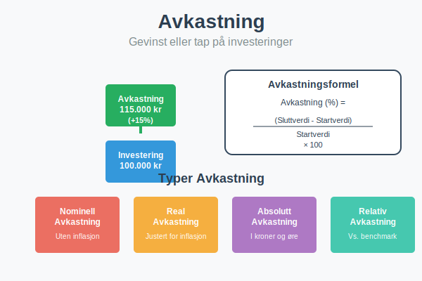
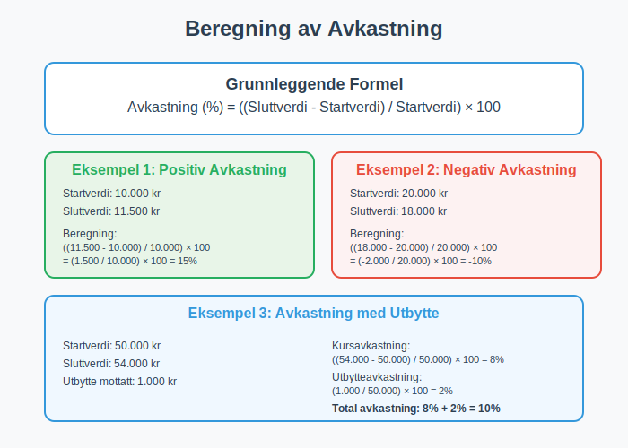
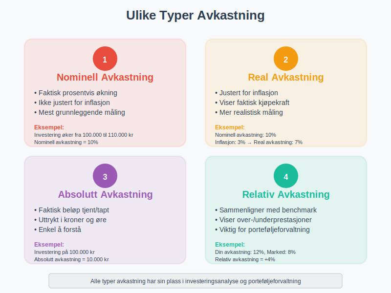
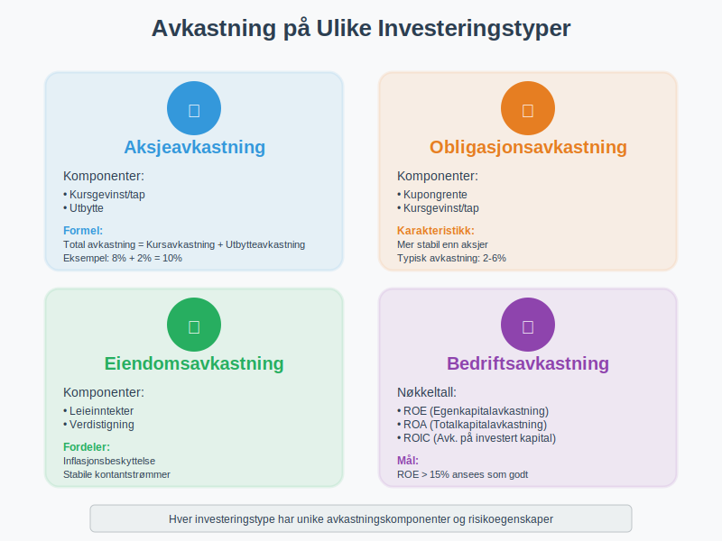
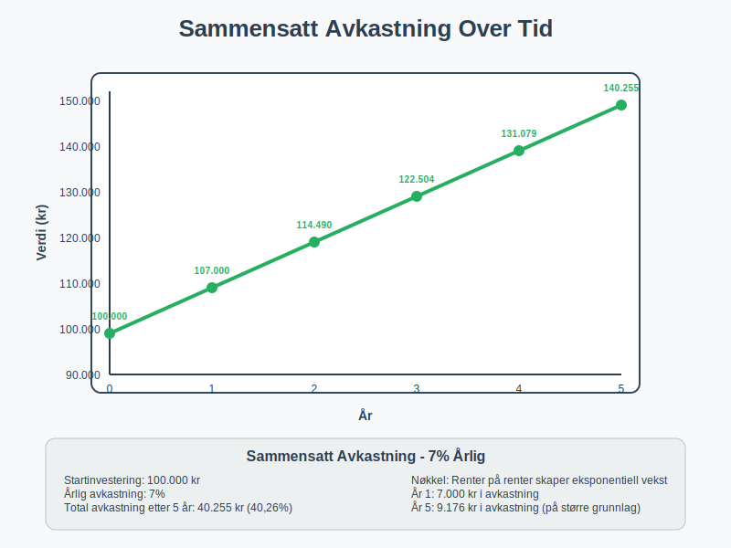
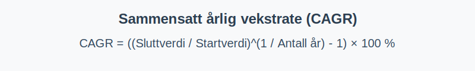
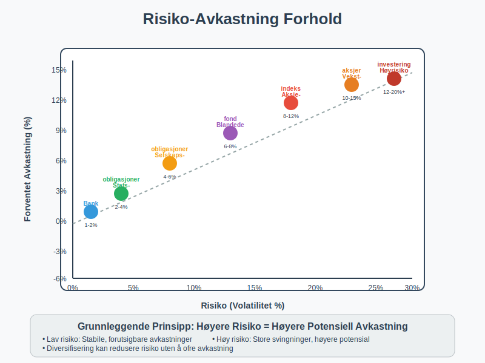
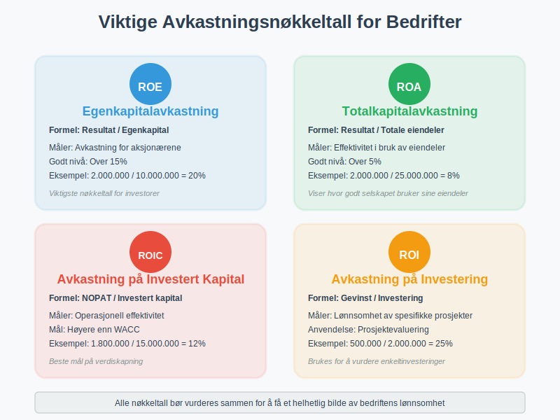
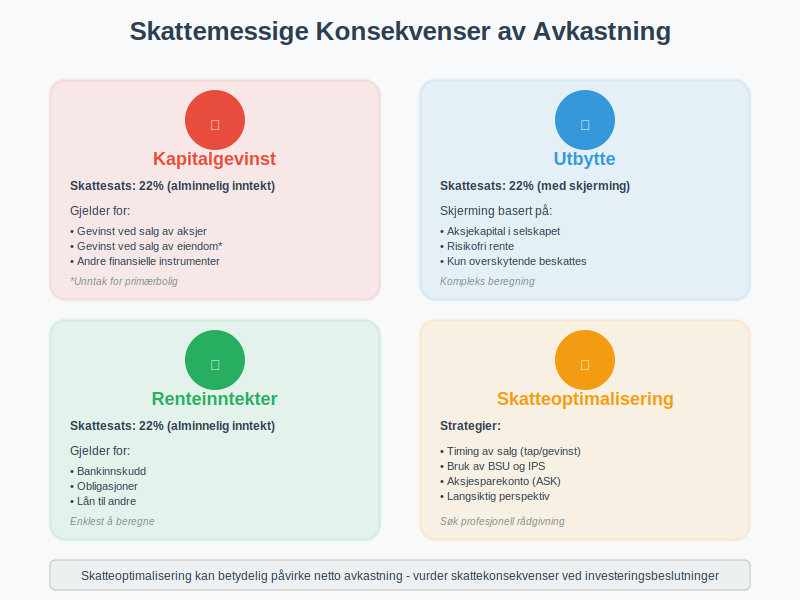
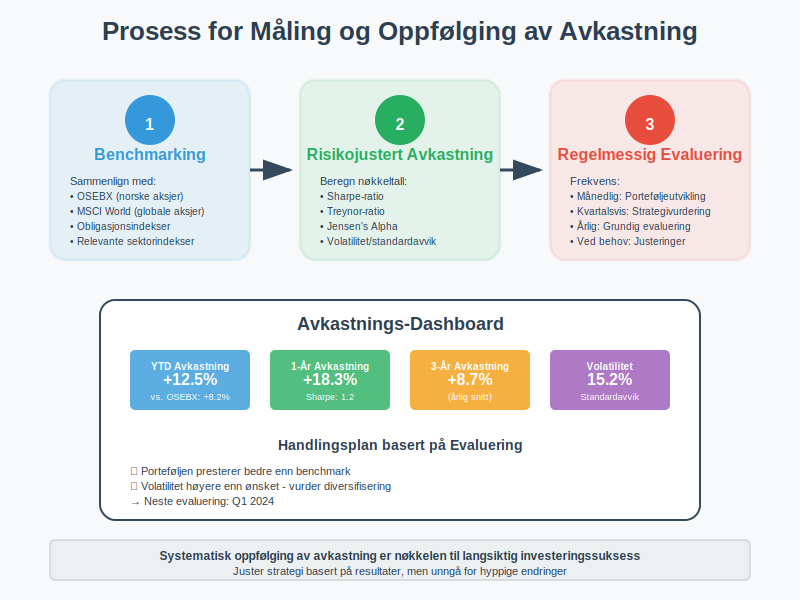

Avkastning er gevinsten eller tapet du får på en investering, uttrykt som en prosentandel av det opprinnelige investerte beløpet. Dette er et grunnleggende konsept innen økonomi og finans som påvirker alle typer investeringsbeslutninger, fra aksjer til eiendom og aksjeselskap.

Hva er Avkastning?
Avkastning måler hvor mye penger du tjener eller taper på en investering i forhold til det du opprinnelig investerte. Den uttrykkes vanligvis som en årlig prosentsats og er et viktig verktøy for å sammenligne ulike investeringsmuligheter.
Grunnleggende Formel for Avkastning
Den enkleste formelen for å beregne avkastning er:
Avkastning (%) = ((Sluttverdi - Startverdi) / Startverdi) × 100

Typer Avkastning
1. Nominell Avkastning
Nominell avkastning er den faktiske prosentvise økningen i verdi uten justering for inflasjon. Dette er den mest grunnleggende måten å måle avkastning på.
2. Real Avkastning
Real avkastning justerer for inflasjon og viser den faktiske kjøpekraften du har fått eller tapt:
Real avkastning = Nominell avkastning - Inflasjonsrate
3. Absolutt Avkastning
Absolutt avkastning er det faktiske beløpet du har tjent eller tapt, uttrykt i kroner og øre i stedet for prosent.
4. Relativ Avkastning
Relativ avkastning sammenligner din avkastning med en referanseindeks eller benchmark. For en dypere forståelse av verdivurdering, se også Q-ratio som sammenligner markedsverdi med bokført verdi.

Avkastning på Ulike Investeringstyper
Aksjeavkastning
Avkastning på aksjer består av to komponenter:
- Kursgevinst/tap: Endring i aksjekursen som ved salg blir kapitalgevinst eller kapitaltap
- Utbytte: Kontantutbetalinger fra selskapet
Se også Utbytteaksjer for en komplett guide til aksjer som gir regelmessig utbytte.
Total aksjeavkastning = Kursavkastning + Utbytteavkastning
For å beregne og sammenligne utbytteavkastning, se yield som forklarer dividend yield, earnings yield og andre yield-målinger for aksjer.
Obligasjonsavkastning
Obligasjoner gir avkastning gjennom:
- Kupongrente: Faste rentebetalinger
- Kursgevinst/tap: Endring i obligasjonens markedsverdi
For en detaljert forståelse av obligasjonsavkastning, se yield som forklarer current yield, yield to maturity og andre obligasjonsavkastningsbegreper.
Eiendomsavkastning
Eiendomsinvesteringer genererer avkastning via:
- Leieinntekter: Månedlige eller årlige leiebetalinger
- Verdistigning: Økning i eiendomsverdien over tid
Bedriftsavkastning
For aksjeselskap måles avkastning ofte som:
- Egenkapitalavkastning (ROE): Resultat i forhold til egenkapital
- Totalkapitalavkastning (ROA): Resultat i forhold til totale eiendeler
- Avkastning på investert kapital (ROIC): Operasjonelt resultat i forhold til investert kapital

Beregning av Avkastning - Praktiske Eksempler
Eksempel 1: Enkel Aksjeinvestering
Du kjøper aksjer for 10 000 kr og selger dem ett år senere for 11 500 kr:
Avkastning = ((11 500 - 10 000) / 10 000) × 100 = 15%
Eksempel 2: Investering med Utbytte
Du investerer 50 000 kr i aksjer som gir 2% utbytte og stiger 8% i verdi:
- Kursavkastning: 8%
- Utbytteavkastning: 2%
- Total avkastning: 10%
Eksempel 3: Sammensatt Avkastning over Flere År
En investering på 100 000 kr med 7% årlig avkastning over 5 år:
| År | Startverdi | Avkastning (7%) | Sluttverdi |
|---|---|---|---|
| 1 | 100 000 | 7 000 | 107 000 |
| 2 | 107 000 | 7 490 | 114 490 |
| 3 | 114 490 | 8 014 | 122 504 |
| 4 | 122 504 | 8 575 | 131 079 |
| 5 | 131 079 | 9 176 | 140 255 |
Total avkastning over 5 år: 40,26%

Sammensatt årlig vekstrate (CAGR)
Sammensatt årlig vekstrate (CAGR) (Compound Annual Growth Rate) beregner den konstante årlige veksten over en investeringsperiode slik at investeringens start- og sluttverdi over perioden matches, uavhengig av svingninger i mellomtiden. Formel:
CAGR = ((Sluttverdi / Startverdi)^(1 / Antall år) - 1) × 100
| Eksempel: Beregning av CAGR |
|---|
| Startverdi |
| 100 000 kr |

Risiko og Avkastning
Risiko-Avkastning Forholdet
Et grunnleggende prinsipp i finans er at høyere potensial avkastning kommer med høyere risiko:
- Lav risiko, lav avkastning: Bankinnskudd, statsobligasjoner
- Moderat risiko, moderat avkastning: Selskapsobligasjoner, blandede fond
- Høy risiko, høy potensial avkastning: Aksjer, vekstselskaper
Volatilitet og Standardavvik
Volatilitet måler hvor mye avkastningen svinger over tid og er et mål på risiko:
- Lav volatilitet: Stabile, forutsigbare avkastninger
- Høy volatilitet: Store svingninger i avkastning

Avkastningskrav og Verdsettelse
Hva er Avkastningskrav?
Avkastningskrav er den minimumsavkastningen en investor krever for å gjøre en investering, basert på:
- Risikofri rente: Avkastning på sikre investeringer
- Risikopremie: Ekstra avkastning for å kompensere for risiko
- Inflasjon: Forventet prisstigning
Avkastningskrav brukes ofte som diskonteringsrente når man beregner nåverdien av fremtidige kontantstrømmer i investeringsanalyser og inntjeningsbasert verdivurdering.
CAPM-Modellen
Capital Asset Pricing Model (CAPM) beregner avkastningskrav:
Avkastningskrav = Risikofri rente + Beta × Markedspremie
Måling av Avkastning i Bedrifter
For å forstå bedriftsavkastning er det viktig å først forstå de ulike typene profitt som ligger til grunn for avkastningsberegningene, da alle avkastningsmål bygger på bedriftens evne til å generere overskudd.
Nøkkeltall for Bedriftsavkastning
| Nøkkeltall | Formel | Hva det måler |
|---|---|---|
| ROE | Resultat / Egenkapital | Avkastning på egenkapital |
| ROA | Resultat / Totale eiendeler | Avkastning på totale eiendeler |
| ROIC | NOPAT / Investert kapital | Avkastning på investert kapital |
| ROI | Gevinst / Investering | Avkastning på investering |
Tolkning av Nøkkeltall
- ROE over 15%: Generelt ansett som god avkastning
- ROA over 5%: Indikerer effektiv bruk av eiendeler
- ROIC over WACC: Skaper verdier for aksjonærene
Disse avkastningsmålene er også sentrale komponenter i inntjeningsbasert verdivurdering, hvor de brukes til å vurdere selskapers verdi basert på deres evne til å generere avkastning.

Faktorer som Påvirker Avkastning
Makroøkonomiske Faktorer
- Renter: Påvirker obligasjons- og aksjeavkastning
- Inflasjon: Reduserer real avkastning
- Økonomisk vekst: Påvirker bedriftenes lønnsomhet
- Valutakurser: Viktig for internasjonale investeringer
Selskapsspesifikke Faktorer
- Lønnsomhet: Bedriftens evne til å generere overskudd
- Vekst: Forventet fremtidig vekst i inntekter og resultat
- Konkurranseposisjon: Markedsandel og konkurransefortrinn
- Ledelse: Kvalitet på selskapets ledelse
En bedrifts bruttofortjeneste er en kritisk komponent i lønnsomhetsanalysen og påvirker direkte avkastningen for investorer ved å vise bedriftens evne til å generere overskudd på kjernevirksomheten.
Markedsfaktorer
- Tilbud og etterspørsel: Påvirker priser og avkastning
- Markedssentiment: Investorenes optimisme eller pessimisme
- Likviditet: Hvor lett det er å kjøpe og selge investeringen
Skattemessige Konsekvenser av Avkastning
Skatt på Kapitalgevinst
I Norge beskattes kapitalgevinst som alminnelig inntekt med 22% skattesats for:
- Gevinst ved salg av aksjer
- Gevinst ved salg av eiendom (med unntak for primærbolig)
- Gevinst ved salg av andre finansielle instrumenter
Skatt på Utbytte
Utbytte fra norske aksjer beskattes som alminnelig inntekt, men med fradrag for skjerming basert på aksjekapital. For utbytte mellom selskaper kan fritaksmetoden gi betydelige skattefordeler.
Skatt på Renteinntekter
Renteinntekter beskattes som alminnelig inntekt med 22% skattesats.

Strategier for å Forbedre Avkastning
Diversifisering
Diversifisering reduserer risiko uten nødvendigvis å redusere forventet avkastning:
- Geografisk diversifisering: Invester i ulike land og regioner
- Sektordiversifisering: Spre investeringer på ulike bransjer
- Aktivaklassediversifisering: Kombiner aksjer, obligasjoner og andre aktiva
- Profesjonell diversifisering: Investeringsselskaper tilbyr profesjonell forvaltning og diversifisering av investeringsporteføljer, noe som kan gi bedre risikojustert avkastning enn det enkeltinvestorer kan oppnå på egen hånd
Langsiktig Perspektiv
Langsiktige investeringer drar nytte av:
- Sammensatt avkastning: Renter på renter over tid
- Redusert volatilitet: Kortsiktige svingninger jevnes ut
- Lavere kostnader: Færre transaksjoner og gebyrer
Kostnadsbevissthet
Lave kostnader forbedrer netto avkastning:
- Forvaltningsgebyrer: Velg rimelige fond og produkter
- Transaksjonsgebyrer: Reduser antall handler
- Skatter: Optimaliser skatteeffektivitet
Reinvestering
Reinvestering av utbytte og renter maksimerer sammensatt avkastning over tid.
Måling og Oppfølging av Avkastning
Benchmarking
Sammenlign din avkastning med relevante referanseindekser:
- OSEBX: For norske aksjer
- MSCI World: For globale aksjer
- Obligasjonsindekser: For renteporteføljer
Risikojustert Avkastning
Vurder avkastning i forhold til risiko:
- Sharpe-ratio: Meravkastning per risikoenhet
- Treynor-ratio: Meravkastning per systematisk risiko
- Jensen’s Alpha: Meravkastning utover forventet avkastning
Regelmessig Evaluering
- Månedlig: Følg med på porteføljens utvikling
- Kvartalsvis: Vurder om strategien fungerer
- Årlig: Gjør grundige evalueringer og justeringer

Vanlige Feil ved Avkastningsberegning
Feil 1: Ignorere Inflasjon
Mange glemmer å justere for inflasjon når de beregner real avkastning.
Feil 2: Ikke Inkludere Alle Kostnader
Glem ikke å trekke fra:
- Forvaltningsgebyrer
- Transaksjonsgebyrer
- Skatter
Feil 3: Kortsiktig Fokus
Vurder avkastning over lengre tidsperioder for å få et riktigere bilde.
Feil 4: Survivorship Bias
Ikke sammenlign kun med investeringer som har “overlevd” - inkluder også de som har feilet.
Avkastning i Ulike Markedssituasjoner
Oksemarked (Bull Market)
I stigende markeder:
- Aksjer gir generelt høy avkastning
- Risikoappetitten øker
- Volatiliteten kan være lav
Bjørnemarked (Bear Market)
I fallende markeder:
- Aksjer gir ofte negativ avkastning
- Defensive investeringer presterer bedre
- Volatiliteten øker betydelig
Sidelengs Markeder
I stabile markeder:
- Utbytteaksjer kan være attraktive
- Obligasjoner gir stabil avkastning
- Aktiv forvaltning kan ha fordeler
Fremtidige Trender for Avkastning
Demografiske Endringer
- Aldrende befolkning: Kan påvirke sparemønstre og avkastningskrav
- Pensjonsutfordringer: Økt fokus på langsiktig avkastning
Teknologiske Endringer
- Digitalisering: Nye investeringsmuligheter og lavere kostnader
- Kunstig intelligens: Bedre analyse og porteføljeoptimalisering
Miljømessige Faktorer
- Bærekraftige investeringer: ESG-faktorer påvirker avkastning
- Klimarisiko: Nye risikoer og muligheter
Regulatoriske Endringer
- Skatteendringer: Kan påvirke netto avkastning
- Nye reguleringer: Påvirker investeringsmuligheter
Konklusjon
Avkastning er et fundamentalt konsept som påvirker alle investeringsbeslutninger. For å oppnå god avkastning er det viktig å:
- Forstå risiko: Høyere avkastning kommer med høyere risiko
- Diversifisere: Spre risiko på tvers av ulike investeringer
- Tenke langsiktig: Dra nytte av sammensatt avkastning
- Kontrollere kostnader: Maksimer netto avkastning
- Følge opp regelmessig: Juster strategi etter behov
Enten du investerer i aksjer, driver et aksjeselskap, eller vurderer aksjonærlån, er forståelse av avkastning essensielt for å ta gode finansielle beslutninger. For bedrifter er sysselsatt kapital et nøkkelbegrep for å måle avkastningen på den totale kapitalen som aktivt brukes i virksomheten. Avkastning er også grunnlaget for inntjeningsbasert verdivurdering, som brukes til å verdsette selskaper basert på deres fremtidige inntjeningsevne.
Husk at tidligere avkastning ikke garanterer fremtidig avkastning, og det er alltid viktig å vurdere din egen risikotoleranse og investeringshorisont før du tar investeringsbeslutninger.